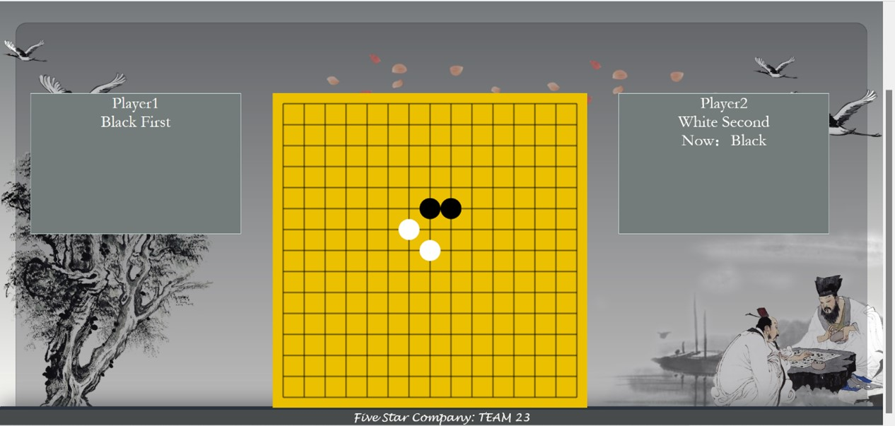
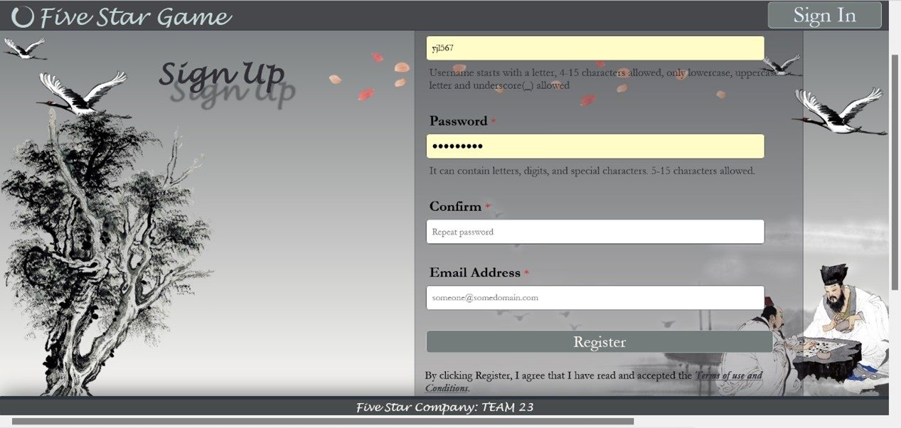

Demonstration
Main page
The local mode of Gomoku game.
- User can play with their friends on the same window.
- It doesn’t need player to log in.
- Their scores would not be recorded into the Rank list.

The online mode of Gomoku game.
- Users play online with the competitor from different windows.
- It requires the user to sign up and in.
- Their scores would be recorded into the Rank list.
Customized setting for logged-in Users
- Log in, log out, editing profile and register functionality.

- The past records show on the profile.
- Users can edit thier information.

Rank list and search functionality
- User could see Top 10 of players according to the rate.
- User could search the username to find the specific user.
- Logged-in user could see his/her Rank.
- User could see players’ profile by clicking their name.
Game introduction
- The page used for who don’t know the rules of Gomoku game.
- The page tells what user should do in different modes.
Banner
- It tells user some information that he/she should notice.
Nav bar
- The name part is dynamically generated for logged/non-logged-in users.
- Night and light mode can be switched to click Dark button.